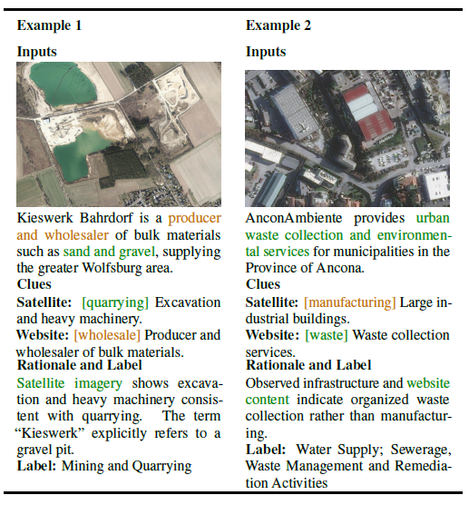

Dataset Maps
Explore the geographic coverage of MONETA and MONETA-10K directly on the project page.
MONETA
1,000 annotated businesses across Europe.
The legend is embedded inside the map, and clicking a marker opens the company detail card.
Abstract
Industry classification schemes are integral parts of public and corporate databases as they classify businesses based on economic activity. Due to the size of the company registers, manual annotation is costly, and fine-tuning models with every update in industry classification schemes requires significant data collection. We replicate the manual expert verification by using existing or easily retrievable multimodal resources for industry classification. We present MONETA, the first multimodal industry classification benchmark that contains text sources (Website, Wikipedia, Wikidata) and geospatial information paralleling company addresses (OpenStreetMap and satellite imagery). Our dataset enlists 1,000 businesses in Europe with 20 economic activity labels according to EU guidelines (NACE). Our training-free and resource-agnostic Multimodal Large Language Model (MLLM) baseline reaches 62.10% accuracy. Our results indicate an increase of up to 22.80% with the combination of multi-turn design, context enrichment, and classification explanations. We will release our dataset and the enhanced guidelines.
Financial Insights from Non Financial Multimodal Sources

We compare financial insight analysis from Geospatial (image) and Web (text) sources. Our multi-turn pipeline extracts financial clues grouped by Industry classification sections. While websites are often the most effective source, when they are absent or less informative, satellite imagery can instead enable correct identification of the industry.
BibTeX
@misc{yüksel2026monetamultimodalindustryclassification,
title={MONETA: Multimodal Industry Classification through Geographic Information with Multi Agent Systems},
author={Arda Yüksel and Gabriel Thiem and Susanne Walter and Patrick Felka and Gabriela Alves Werb and Ivan Habernal},
year={2026},
eprint={2604.07956},
archivePrefix={arXiv},
primaryClass={cs.AI},
url={https://arxiv.org/abs/2604.07956},
}